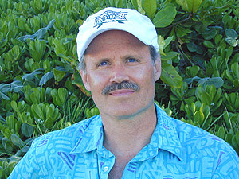
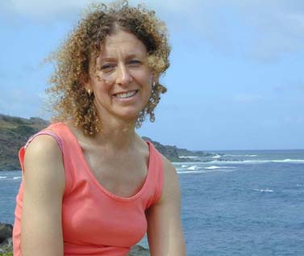
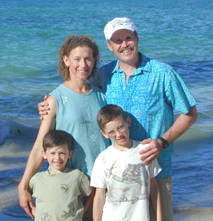

Evening sun bathes "The Mokes" -- protected isles near USDT/West -- the heart 'n' soul of U.S. Dive Travel.
� Copyright John Hessburg, U.S. Dive Travel Network. All rights reserved, all photos & text.
| Home / Dive Resorts / Live-Aboards / Snorkeling / Who We Are / Book a Trip |
©
Copyright U.S. Dive Travel Network.
|
 |
 |
Dear Divers & Snorkelers Around the World:
Thank you for browsing through our website today. We hope we can be of
service to you soon. Good news, sunseekers ! Just when you thought you'd seen it all
in the world of tropical travel -- get ready to be surprised. There IS,
after all,
Something
New Under the Sun.
It's the website of U.S. Dive Travel.
TM
We are a family-owned agency that serves you with a touch of class, & a ton
of TLC. We've revamped & amped up this
Internet site to show you some winning techniques for planning a dive vacation the best ways possible. Even by conservative measure,
the U.S. Dive Travel
website is now the largest & most photo-rich resource for scuba diving trips & snorkeling vacations on the Worldwide Web.
We hope you enjoy your browsing; because you are now in a Hassle-Free Zone, where easy humor along with safety consciousness prevail. U.S.
Dive Travel is America's answer to scuba divers, snorkelers & tropical island beach baskers who are fed up with dive vacations
as usual. Give us a tele-call, any time; you'll be happy you did....
ARE YOU:
Whom can you believe anymore, when many scuba diving periodicals slosh praises
over a shopworn island & its L'Hotel Hovel, as if these passe' destinations
were the next best thing to tropical bliss? If you need a new friend in dive travel
planning, you're in luck. Welcome to U.S. Dive
Travel. Here is our fundamental
promise. We'll do it right for you, right from the start. The formula is simple. This is YOUR dive vacation. You are in
charge. We work for you. To prove we respect your intelligence & your consumer prerogatives,
we'll tell you the straight story straight away, even if it isn't exactly
what you expected to hear. We are your dive vacation advocates. Your satisfaction
is our success. That's why our dive vacation clients become good friends, not digit clusters on some
corporate spreadsheet.
We sincerely thank you for considering a scuba vacation, a snorkeling
trip, or a customized overseas adventure from U.S.
Dive Travel. As a full-service agency, USDT offers you convenient
"one-stop shopping." We'll
combine puddle-jumper air tickets, lodging & live-aboard diving, island dive operations -- or whatever cultural side tours
you choose -- into one affordable streamlined dive package for you.
This Internet site was created to help dive travelers by showing you how to
secure better discounts & better vacation value, plus safer trips all around. The U.S. Dive Travel
website has been the largest text + photo resource for dive vacations on the Internet since 1995, & one of the top page-ranked sites for "dive travel," "dive resorts," "dive vacation(s)," diving trip(s), "snorkeling vacation(s)" & "live-aboards." We serve scuba
divers & snorkelers with equal enthusiasm, all seasons. Our founders each have more than 38 consecutive years of hands-on
experience planning & guiding adventure tours & expeditions in many countries across
Latin America & the greater Pacific Region. Our many repeat clients in countries around
the world, whom we connect with the 200+ dive resorts & 30+ live-aboards we represent in 30 countries,
say they enjoy returning to USDT each year for their dive vacations. We work hard for you, & we
hope to remain worthy of your confidence. We also hope to enjoy you as new clients soon.
The world is your dive vacation oyster, & U.S. Dive Travel is the spoon.
Before we continue, a little reminder --
| OUR RESERVATIONS OFFICE: U. S. Dive Travel Network Voice Mail: 952-953-4124. Click here to view John Hessburg's E-mail: divetrip@bitstream.net |

Hessburg, with sons Bo (left) & Jack, back in days of east-shore yore, Oahu.
|
USDT has good news for
scuba divers, & snorkelers too, who are shopping for good value in
a tropical trip. We offer you four dive vacation plans:
We are a full-service adventure travel center,
offering you some of America's best bargains on all facets of
your scuba vacation from lodging to watersports to air tickets. All of
our guided dive tours are run by an independent affiliate agency called
Wild Island Expeditions
-- also based in the Twin Cities, MN, USA. But whenever your dive vacation choice
is a "do-it-yourself" trip to
any Caribbean or Pacific dive resort, or aboard any of the live-aboard yachts
we represent, then you are a client of U.S.
Dive Travel.
We are trained & experienced adventure travel professionals. John
Hessburg, general manager of U.S. Dive Travel Network,
is a PADI divemaster as well as a longtime adventure-travel consultant,
with professional mountaineering experience. Operations manager Susan Hessburg is
also a PADI-trained diver, a dive travel associate, & an experienced
trekker & mountaineer. John & Susan know & love the sports
of scuba diving, snorkeling, ocean kayaking, surfing, rock climbing, alpine mountaineering & trekking. They truly
enjoy helping adventure travelers with a yen for exotica & economy to plan memorable
vacations on......
Wild Islands, or in Wild Highlands, well off
the beaten path.
The rhythm of our professional lives is simple & consistent, year after year, for the last 23 years. We spend the peak rez-booking season -- from mid-August through fall, winter & spring to mid-June -- at "U.S. DIVE TRAVEL / East" in the Twin Cities, Minnesota USA, fielding client calls, working with solos, couples & groups across Europe & North America, matching their visions to dream destinations worldwide. From mid-June through mid-August we travel the breadth of our contract properties across the Caribbean & Pacific, working much of each summer at "U.S. DIVE TRAVEL / West" on O'ahu island in the Hawaiian Isles. O'ahu is a picture-perfect locale for us, a convenient hub for our Pacific property inspection tours to island nations from Oz to Fiji; & also an ideal place to keep current with our training, dive skills & "continuing ed" in the underwater realm.
To serve you better, we have mastered the art of low-cost high adventure
during more than 38 years of world travel to many countries throughout
Latin America & the Pacific Rim aka Oceania. Our owners normally are overseas for
several months each year on business travel, so economizing is more than a passing
interest for us. Our company's dive travel associates have learned many special techniques to trim
our own costs overseas, while still ensuring full safety & comfort.
And we use all these techniques to help you, too. When you book a scuba diving trip with
U.S. DIVE TRAVEL you always get the "Family Deal." The way we extend special
courtesies & perks to our immediate family when they ask us to plan their tropical travel --
that's the same up-front, TLC treatment all USDT clients get, all seasons.
At U.S. Dive Travel we know that we are nothing without you, our valued
clients. That's why we never forget our prime responsibility -- to serve
you with patience, flexibility, humor & painstaking attention to accuracy.

U.S. Dive Travel is one of few adventure travel
wholesalers
in North America who can offer you all of these Five
Special Services:
1. We meet any & all local clients who so request,
in person, at your home or office, if the group is 20 committed clients or larger. All meetings are by advance appointment
only, & are based on time slot-availability during high season (November through April).
For groups of 20 or more committed clients, we'll even give you
a private slide show & video presentation, with Q & A, at your
home or workplace.
2. We offer qualified price protection on puddle jumper air tickets, wherever we hold a wholesale air contract to your destination. Once you commit to our best price quote & pay us for your air tickets, if we were not able to secure wholesale seats for you right then, because they'd sold out for your chosen dates, we may be able to wait-list you until about four weeks before you depart. Then we'll alert you if these discount seats re-appear. For example, an out-of-state dive travel competitor might suddenly release a large block of seats they've been holding for weeks, because a dive tour group canceled. These seats pop up in our computer system & we alert you immediately.
3. If you need to update your scuba diving gear, we'll help connect you to reputable experts who frequently can secure the rock-bottom lowest prices in the nation for quality brands. By the rules of our travel partnership, U.S. Dive Travel takes zero commissions for these gear referrals. We do it for you. We're glad to take the time to help you secure new gear that will enhance your safety & enjoyment. All we ask is: tell a friend about us.
4. We take care to hone even the smallest details for you. For example, we'll give you impeccably organized pre-trip checklists to help you plan what scuba gear & peripherals to take, what shots to get, whom to call for visa questions, & how to find the best deals in travel insurance. Nothing is left to chance. Well nothing except the weather & bugs.
5. We are the largest & most experienced tropical adventure-travel planning agency in the Central USA, in the region that extends from 1,000 miles east of the Mississipi River to 1,000 miles west of the Mississippi. Many preferred clients over the last 2 decades regard us as North America's
leading experts on resort-based scuba diving, & shore diving in the
Hawaiian Islands. After more than 23 extended 3-6 week visits from the mainland & about 40 island-specific dive tours
since 1990 to the isles of Niihau, Kauai, Oahu, Maui, Molokai, Lanai
& Hawaii (The Big Island), we know scores of secret spots the guidebooks
missed -- from the best hide-away beaches, to the best shore diving coves,
to the best-value small hotels & dive operations.
There's another way we try to put respect for our dive travel clients before unvarnished profit.
Consider this question -- do you really need
travel insurance? In most cases it's a very wise idea.
We'll take the time to give you solid advice & a list of America's
top travel insurance firms, including their 1-800 numbers so you can save
a buck or two on your call. Though most of our dive travel competitors sell
cancellation insurance, we at U.S. Dive Travel
do not feel ethically comfortable doing so.
The way we see it: here you are about to spend a lot of money on a dive trip
that by its very nature is riskier than beach basking in the Florida Keys. Therefore,
you already know there's a small risk to scuba diving. So for us to drub
a sense of mishap anxiety into you before your dive trip, then try to sell you
something to assuage that anxiety, seems like snake oil salesmanship.
We just want to improve the security of your dive vacation. Our goal is
to earn your respect, your friendship & your trust, so that
down the line we may be blessed with your repeat dive travel business. With more than two decades of successful dive travel
experience behind us, we can guarantee
you fast & friendly service, expert advice, extremely competitive prices
& even more.
Our TOP PRIORITIES at U.S. Dive
Travel are:

So who are the people who manage U.S. DIVE TRAVEL?
General manager of the dive travel service, John Hessburg is trained in
land & ocean rescue, & is fluent in Spanish & Brazilian Portuguese, conversant
in classical German. A native of St. Paul, Minnesota, John moved to Seattle in '82, then back to St. Paul in June '99 after his
father suffered a serious heart problem.
With wife, Susan, he fell in love with the Pacific & founded Wild
Island Expeditions & later that guide service grew into the present-day U.S.
Dive Travel in April '91.
John has led dozens of land-based expeditions & tours abroad for
more than 38 years. These include more than 40 dive trips to various Hawaiian Islands,
7 dive trips to the South Pacific, one to the Arabian Peninsula, many to Mexico & the Western
Caribbean, three mountaineering expeditions to remote sectors in the Argentine
& Bolivian Andes, several trekking & photo trips throughout South
America, two whitewater & voyageur canoe expeditions in the wilderness
of Ontario, two long-distance bike tours of Canada & California, plus
countless scores of rock & ice climbs in the Colorado & Canadian Rockies
& the Cascades. John also has completed 19 cross-country ski marathons
(50-55 kilometers) back in MN & WI since 1977.
A native of windward Oahu in Hawaii, Susan Hessburg is a PADI-certified
diver, who with John has made dozens of adventure trips back to the Hawaiian
Islands since 1990. Susan has climbed three of the tallest glaciated peaks
in the Cascade Range & a number of smaller ones. While keeping the
company books & computer system on track, Susan & John also are
raising two livewire boys: Jack & Robert Marcus.
Between dive tours, John is perpetually re-writing his first book, a politically
incorrect look at the spirit & humor of adventure travel in some of
the world's most fascinating & off-beat cultures. Before founding U.
S. Dive Travel, John Hessburg graduated summa cum laude & Phi Beta Kappa from the University of Minnesota School of Journalism in Minneapolis, then worked for 15 years as an investigative
reporter & news writer for several magazines & daily newspapers
across the USA. That first career spanned nearly nine years as a staff writer at the
metro daily, the Seattle Post-Intelligencer. John also served as a Pacific Northwest
correspondent for Reuters, the British international news agency, during those 9 years at the Post.
In the 1980s, he was twice
nominated for a Pulitzer Prize, one time solo for a feature piece about America's Vietnam years,
& once as member of a team analyzing a Mt. Hood climbing tragedy that claimed several young students.
John won about a dozen state & regional
reporting awards in Minnesota & Washington states, including Minnesota's highest honor for investigative journalism -- the Frank Premack Award in 1981.
One series of about 25 stories in the Seattle morning newspaper, published
in the late 1980s, exposed rampant timber theft on U.S. Forest Service
lands in Washington, Oregon & Alaska, which for decades had cost American
taxpayers millions of dollars a year. Prodded by those stories, & public
outcry over Forest Service malfeasance, Congress eventually passed strict new
laws regulating timber sale accountability. Now logging in America's national
forests falls under far tighter law enforcement scrutiny, to protect vulnerable
public resources from a corrupt old-boys network of timber pirates that used to
prey at will on the Pacific Northwest.
In a lighter vein, U.S. Dive Travel's
co-director Susan Hessburg, whose hobbies include gourmet Asian & Mediterranean
cooking, back-country skiing & old-country cross-stitching, worked
more than seven years as senior sales coordinator for a successful manufacturer's
rep firm in Seattle. She is our accounting & organizational maven; & can juggle 4 or 5 several key
tasks at once with accuracy & aplomb. (Raising two testosterone-driven sons who, like their parents, live at about 120 mph, is good practice
for any office manager!)
John Hessburg & Susan Hessburg are backed by members of their immediate family, including one web-tech & agent in Hawaii, & another tech & accountant in Minneapolis, MN.
In addition, U.S. Dive Travel has two senior partners in Vancouver, BC, & two more in the Houston, Texas area, plus important contract associates in the Denver, New Orleans & Miami areas. This compact, efficient network is linked to scores of travel agencies & dive centers all across the USA, Canada & Europe.
Our USDT planning team has several veteran
travel agents in metro cities across the USA who specialize in securing discount international air
tickets for our clients. In addition, U.S. Dive Travel has built a skilled
& experienced network of divemasters & instructors around the world, who lead group
trips to Pacific & Caribbean islands for USDT on a contract basis each year.
So when you book a dive trip -- whether dive resort or live-aboard -- or any custom overseas adventure, with
the friendly folks at U.S. Dive Travel,
you'll have experienced advocates who know how to cut quickly through red
tape, working hard as your personal dive travel consultants. Thank you again
for your time & interest. Looking forward to hearing from you. Good
Health & Good Humor for a Bon Voyage!
John Hessburg & Susan Hessburg
& the USDT Partners in North America.
U. S. DIVE TRAVEL NETWORK


© Copyright U.S. Dive Travel Network.
| Home / Dive Resorts / Live-Aboards / Snorkeling / Who We Are / Book a Trip |